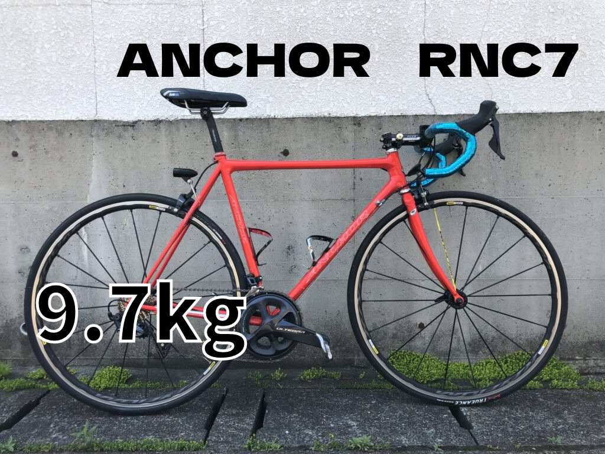
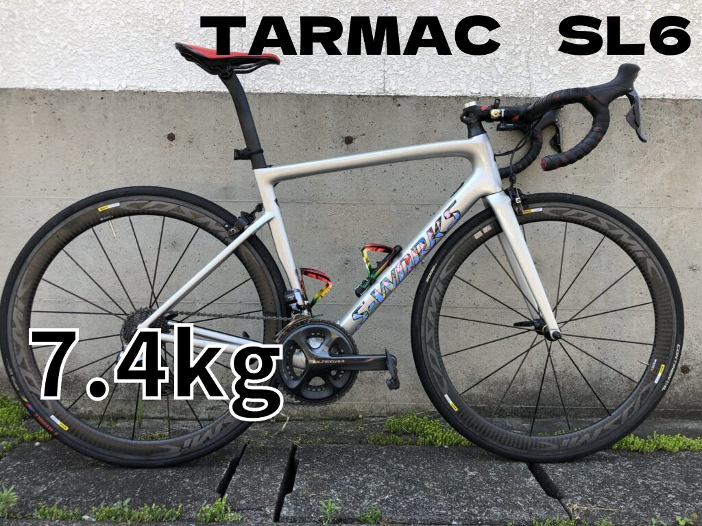

旧ブログを掘り返したら、219本の記事と523枚の画像が出てきた
昔の自分の部屋を片付けるつもりが、ロードバイクの化石発掘現場になりました。

まず、掘ったら出た
旧ブログの名前はたぶん「ロードバイク時々マウンテン」だった。 たぶん、という時点でもうだいぶ危ない。自分で作ったブログ名なのに、発掘現場の土器みたいな扱いになっている。 人は忘れる。ブログ名も忘れる。FTPはもっと忘れる。人間という生き物はだいたい都合よくできている。
それで、Wayback Machineを使って過去記事を探してもらった。 最初は「まあ数本でも残っていればラッキーかな」くらいの気持ちだった。 押し入れから昔のジャージが一枚出てくるくらいの温度感である。 ところが実際に開けてみると、出てくる。出てくる。まだ出てくる。
最終的に、HTMLとして保存できたページが234件。 そのうち記事として使えそうなものが219件。 重複やサイズ違いを整理した現在の保存済み画像は523件。
523件。
ちょっと待ってほしい。 これはブログの復旧というより、昔の自分が撮り散らかした画像の地層を、ようやく人間が歩ける道に均した状態である。 古代文明なら壁画。私の場合はロードバイクと、パーツと、よくわからないスクショと、妙に元気な見出し画像。 学術的価値は今のところ不明だが、本人への精神的ダメージはかなりある。
昔のブログは、だいたい勢いでできている
復旧した記事タイトルを眺めていると、昔の私はかなり雑に楽しそうだった。 「ハルヒル 2017 49分36秒」みたいな真面目そうな記録もある。 「パワークランク 知ってる？腹筋ってツルんだよ！！」みたいな、タイトルだけで腹筋が不穏になる記事もある。 「失敗シリーズ」なんてカテゴリまである。自分で自分の失敗をシリーズ化するあたり、今よりだいぶブログ適性が高い。
いや、違う。 ブログ適性が高いのではなく、失敗の在庫が多かっただけかもしれない。 在庫管理ができていない人間は、失敗すら棚卸しできない。 そう考えると、当時の私は意外と優秀だった可能性がある。 物は言いようである。
ただ、今回の新ブログでそのまま昔の記事を再掲載するつもりはない。 昔の文章は昔の文章として、その時の熱量や恥ずかしさがある。 それを令和最新版の顔で「どうも、昔の記事です」と出すのは、冷蔵庫の奥から出てきたタッパーを来客に出すようなものだ。 いや、食べられるかもしれない。でも一回匂いは嗅ぎたい。
だからこのブログでは、昔の記事を素材として使う。 その時の自分が何を考えていたか。 今の自分から見ると何が正しくて、何が雑だったか。 そしてAIに読ませたらどこを突っ込まれるか。
この三者面談が、たぶん面白い。

過去の自分、今の自分、AI。面倒な三人組
今回の富士ヒル挑戦は、ただのトレーニング日誌にしたくない。 というより、普通のトレーニング日誌を毎日おもしろく書けるほど、私の生活は劇的ではない。 朝起きて、仕事して、ローラーして、ご飯を食べて、脚が重いとか言う。 これを毎日ドラマチックにするのは、さすがに無理がある。
そこでAIである。 ただし、AIを先生として扱うつもりはあまりない。 先生というより、面倒な同居人に近い。 「前日は軽くした方がいいです」と言ってくる。 こちらは「わかる。でも太平を少しだけ走りたい」と言う。 もうこの時点で、会話というより家庭内の小競り合いである。
昔の記事をAIに読ませると、たぶんこうなる。
「この時期、練習量の割に回復の記録が少ないですね」
うるさい。
「この機材レビュー、感情の比率が高く、比較条件が曖昧です」
やかましい。
「ただし、読者に伝わる熱量はあります」
そういうところだけ褒めるな。人間が調子に乗る。
でも、このやり取りがたぶん読み物になる。 数字だけを並べるなら、パワーメーターと体組成計で足りる。 しかし、なぜその練習をしたのか、なぜその食事をしたのか、なぜ過去の自分はその機材に妙な愛着を持っていたのか。 そのあたりは、数字だけでは出てこない。
ブログにしたいのは、そこだ。
219本の記事は、宝の山なのか、黒歴史なのか
復旧した記事の内訳を見ると、富士ヒルやヒルクライム系が23件。 機材レビュー系も23件。 ローラーや練習が13件。 食事や補給、体調が11件。 そして失敗シリーズが10件。
失敗シリーズが10件もあるの、なかなかいい。 成功談は人をちょっと退屈にさせるが、失敗談はだいたい人を元気にする。 「ああ、この人もやらかしている」と思えるからである。 人類は他人の成功で焦り、他人の失敗で呼吸を整える。 ひどい話だが、そういうものだ。
富士ヒルを目指すブログとして考えると、昔のヒルクライム記事はかなり使える。 2019年に富士ヒルを1時間8分1秒で走った時の記憶は、今の体にはそのまま使えない。 体重も違う。バイクも違う。仕事も生活も違う。たぶん回復力も違う。 しかし「何をしていたらそこまで行けたのか」という痕跡は残っている。
それはトレーニングメニューというより、考え方の化石だ。 どのくらい追い込んでいたのか。 どのくらい雑だったのか。 どのくらい機材のせいにしていたのか。 どのくらい、楽しく走っていたのか。
ゴールドを狙ううえで一番怖いのは、たぶん苦しさではない。 楽しくなくなることだ。 楽しくなくなると、強くなる前にやめる。 強度より先に、気持ちがDNFする。
だから昔の記事は、単なる過去ログではない。 「楽しく強くなる」ための、過去の自分からの雑なメモである。 字は汚い。テンションもおかしい。でも、たぶん使える。

画像523枚という、ありがたいけど困る量
画像が残っていたのは本当にありがたい。 ブログは文章だけでも成立するが、自転車ブログは写真があると急に空気が出る。 バイクの写真、山の写真、イベント告知画像、よくわからないスクショ。 それらがあるだけで、「ああ本当にやっていたんだな」という実在感が出る。
ただ、523枚は多い。 多すぎる。 写真を選ぶだけで一日が終わる可能性がある。 画像フォルダを開いた瞬間、こちらの精神がローラー台の上で空転する。
なので、使い方は絞る。 まずは富士ヒル、唐沢山、古峯神社、Tarmac SL6、RNC7、ローラー、失敗シリーズ。 このあたりを優先して、今の挑戦に接続しやすい記事からリメイクする。
逆に、今のブログと関係が薄いものは無理に使わない。 過去記事の在庫があると、つい全部使いたくなる。 だが全部使おうとすると、だいたい何も進まない。 冷凍庫の食材を全部料理しようとして、結局カップ麺を食べるようなものである。
まずは使えるものから使う。 それでいい。
この発掘を、どうブログにするか
旧ブログリメイク記事は、たぶん三層にすると読みやすい。
一つ目は、昔の記事の要約。 当時の自分が何をして、何を言っていたのか。 ここは淡々と整理する。
二つ目は、今の私のツッコミ。 「その練習、今やったら普通に疲労で終わるのでは」とか、 「その機材評価、テンションで押し切りすぎでは」とか、 過去の自分に対して、今の自分が正面から文句を言う。
三つ目は、AIのツッコミ。 数値、体重、練習頻度、回復、食事、機材の前提を見せて、 「今の富士ヒル挑戦に使うならどう見るか」を相談する。
つまり、昔の自分、今の自分、AIの三人で、机を囲む。 たぶん一番うるさいのは今の自分である。 AIは意外と冷静で、昔の自分は謎に元気。 そして中の人は、全員の話を聞きながらご飯を300g食べる。
なんだこの会議。

次にやること
まずは、富士ヒルとヒルクライム系の記事からリメイクする。 唐沢山、古峯神社、ハルヒル、富士ヒルに近い考え方の記事。 このあたりは、今の挑戦と相性がいい。
次に、機材記事。 Tarmac SL6、RNC7、ホイール、パワークランク。 今はAethos2で富士ヒルに出る予定なので、昔の機材感覚を読み直す価値がある。 機材は速さに効く。財布にも効く。どちらも痛みを伴う。
それから、失敗シリーズ。 これはブログとして強い。 人は成功談より、失敗談の方を信用する。 いや、成功談も読みたい。でも失敗談には、謎の栄養がある。 疲れた日の味噌汁みたいなものだ。
そして日々のログ。 今やった練習、食べたもの、AIに相談したこと、採用したこと、却下したこと。 これを積み上げていく。 旧ブログは過去の資産。 これからの実験記事は、未来の自分が読み返す地層。
1年後に富士ヒルゴールドを取れるかは、まだわからない。 出るかどうかすら、モチベーション次第である。 でも、少なくとも今日、過去の自分が残した219本の記事と523枚の画像は掘り起こした。
これはもう、トレーニングというより遺跡調査だ。 しかも発掘品の大半がロードバイクと失敗談。
悪くない。